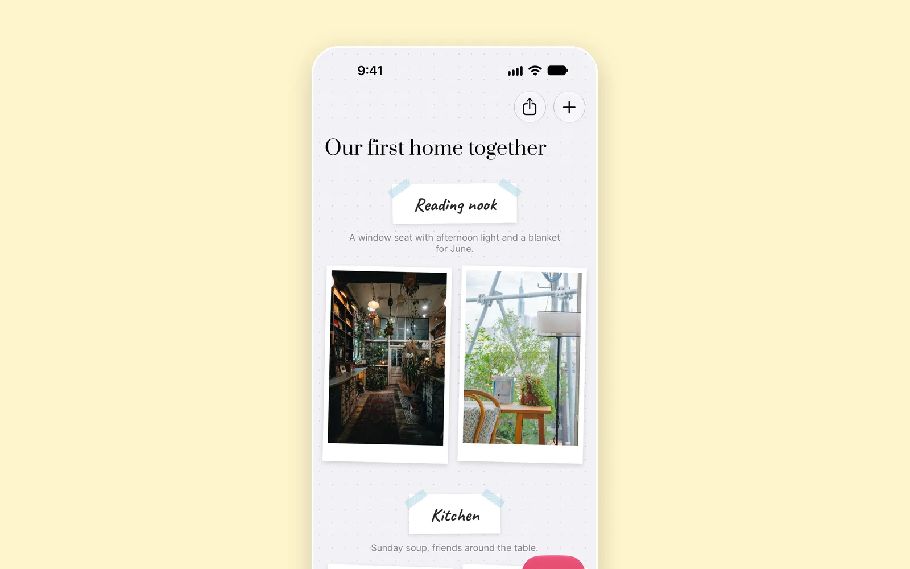
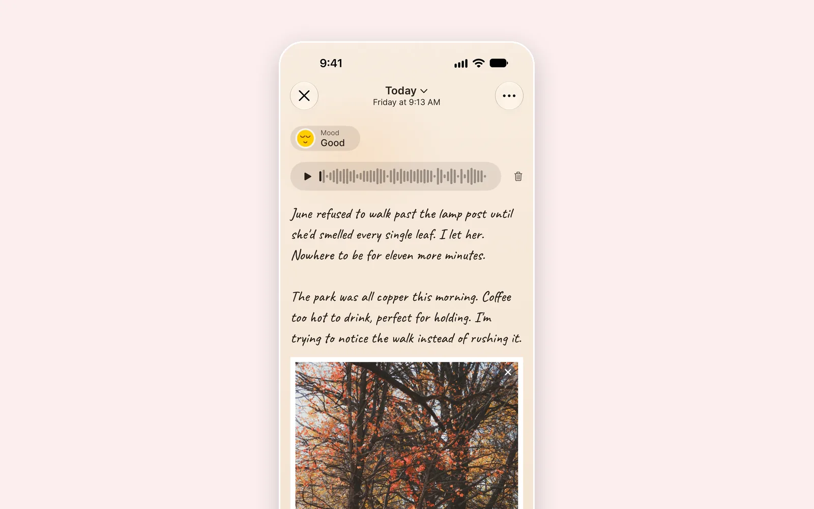
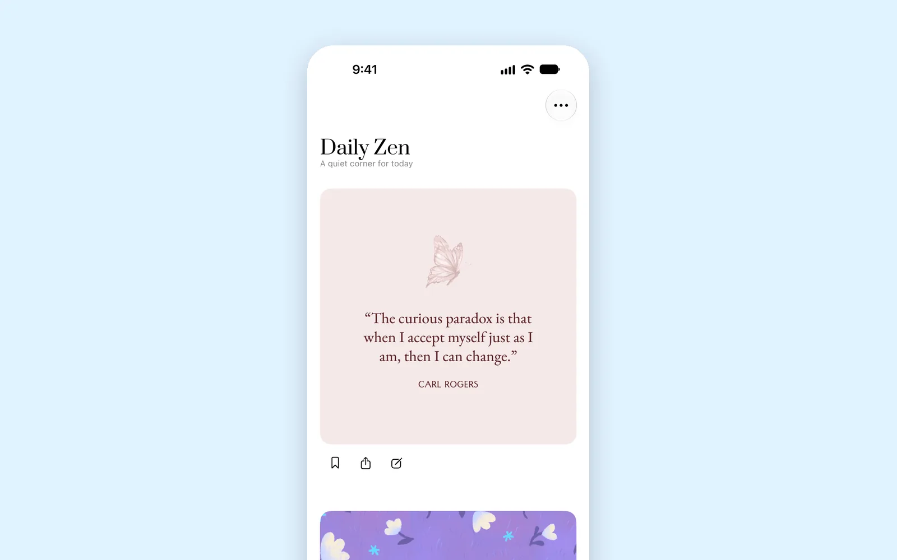
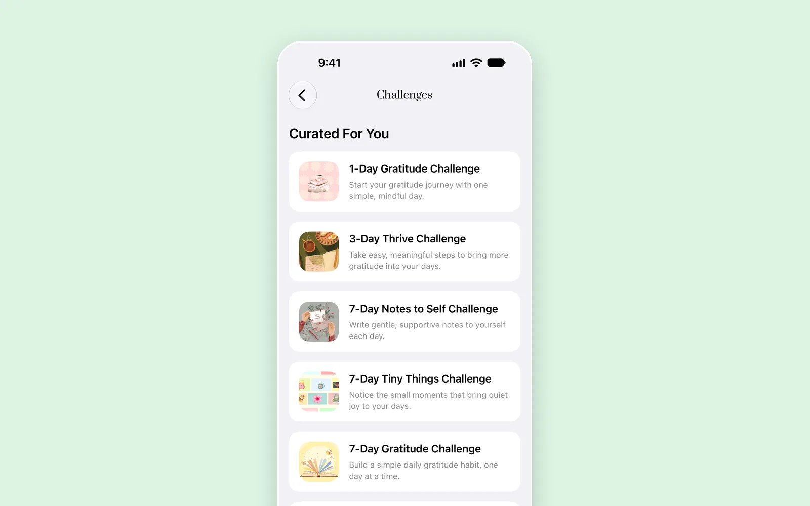
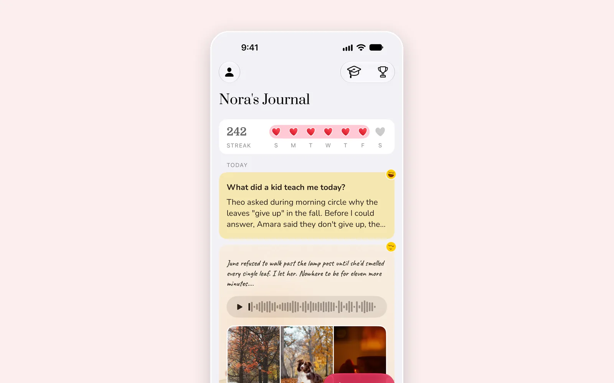
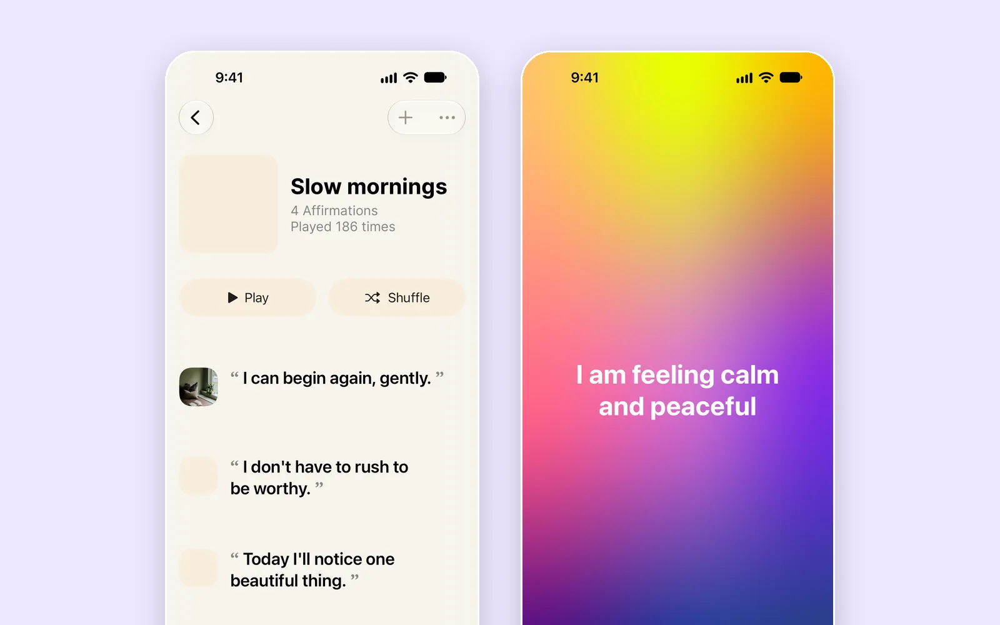

6.0.4 November 22, 2026
Moving your journal between iPhone and Android is safer, easier and quicker.
6.0.3 November 7, 2026

Your vision board now looks like a real corkboard, and an entry you're writing is saved as you go.
A new vision board: photos as polaroids and section titles on pinned notes. Drag to rearrange, swipe through your photos, and make a Printable Kit to print and pin up. Your writing is saved as a draft as you go, so closing the app no longer loses it. Restoring from Google Drive no longer adds a second copy of an entry's photos and voice note. Entries moved to Recently Deleted stay there, and an entry keeps its recipient when you edit it. iCloud shows as paused, not as an error, when iCloud is off on your iPhone. Fixes for crashes in affirmations, vision boards and challenges, and a smoother journal list. 6.0.2 October 29, 2026
Turn your entries into a PDF book, share any entry as a card, and bring back entries from older backups.
Download Your Journal: a PDF book of your entries, with your choice of dates, cover and title. Find it in Settings. Share any entry as a card in your page's style, with every word and photo, to WhatsApp, Instagram Stories or Messages. Save a single day as a PDF from your streak calendar, free for everyone. Older Backups in Settings looks through earlier Google Drive backups and brings back entries missing from this device, with their photos and voice notes. Remove your default page style any time, and Random colours now pick from a bright pastel wheel. Neater ruled pages, prompts and photos. 6.0.1 October 19, 2026
iCloud backup and restore are faster and more reliable.
Deleting an entry now removes it on all your devices. Photos and voice notes stay with restored entries. Journal backgrounds load faster and work offline. 6.0 October 8, 2026

Guided courses you can take at your own pace, and backgrounds, colours and fonts for your journal.
Guided Courses with short lessons you can follow at your own pace. Make your journal your own with backgrounds, colours and fonts. Performance improvements and bug fixes. 5.8 – 5.8.3 September 15 – October 2, 2026
Write down a grateful moment or listen to affirmations by asking Siri.
Ask Siri to capture a grateful moment or play your affirmations, on iOS 27. The first guided Courses arrived in 5.8.3. 5.6.9 – 5.7.9 May 28 – September 2, 2026

A redesigned Daily Zen, a new Gratitude Worksheet, and steady stability work through the summer.
A new Gratitude Worksheet. A redesigned Daily Zen. Daily Zen posts share to Instagram again. 5.6 – 5.6.8 April 1 – May 23, 2026
A new welcome for people opening Gratitude for the first time, and fresh streak icons.
A new onboarding experience. Updated streak icons. Fixed challenge progress getting stuck on day 2. 5.5 March 26, 2026
Deleted entries wait in a recycle bin, and Daily Zen and affirmations come to your Apple Watch.
A recycle bin for recently deleted journal entries. Apple Watch widgets for Daily Zen and affirmations. Google Drive backup handles large journals better. Fixed the affirmation widget shuffle and blank rows in the affirmation list. The new entry button label is easier to read with accessibility settings on. 5.4 – 5.4.9 January 28 – March 12, 2026

A clearer way to track and finish challenges, quick actions on entries, and steadier PDF and ZIP exports.
A refreshed way to track and complete challenges, and you can copy challenge examples. Long-press a journal entry to share or delete it. PDF exports show their progress and are more reliable; ZIP import and export are faster. A Streak Saver switch on the reminders screen. Affirmations share again, and keep the text and background colours you chose. Fixed scrolling in long entries with photos, and the 21-day milestone in the 28-day challenge. 5.3 – 5.3.2 January 12 – 19, 2026
Fixes for challenges, Gratitude Rewind and numbered lists, and more reliable reminders.
Challenges now complete when you finish every day. Gratitude Rewind shows the right year. Numbered lists carry on when you edit an entry. Notifications arrive more reliably. 5.2 – 5.2.4 December 1, 2025 – January 6, 2026

Fill in a missed day to keep your streak, see your year in Rewind, and a cleaner journal home.
Streak Revive: tap + on a past day in your streak to add an entry for it. Nudge cards that help you catch up on missed entries, and a Streak Saver reminder. Gratitude Rewind 2025, from 1 December. Waveforms for voice recordings, refreshed mood emojis and new journal cards. Portrait photos centre on faces in your journal cards. Share your own Daily Zen story from the app. Dotted bullet lists in entries, and list-style affirmation sections. Vision board suggestions for 2026. 5.1 – 5.1.3 October – November 2025

Listen to affirmations in the background, pick folders for your widget, and see your streak at a glance.
Affirmations keep playing in the background, over an animated gradient. Choose which affirmation folders show in your widget. Your streak on the journal home screen, with calmer journal colours. Fixed a crash after saving an entry on iOS 18, and text overlapping while you type. 5.0 – 5.0.2 September – October 2025
A Liquid Glass design for iOS 26, with affirmations and a weekly review made for you on your device.
Liquid Glass design for iOS 26. A personal affirmation for every journal entry, powered by Apple Intelligence. It all happens on your device. A personal weekly review to help you reflect. Stickers when you share a journal entry. Small updates with fixes only are grouped together. Looking for the Android app? See Android updates .